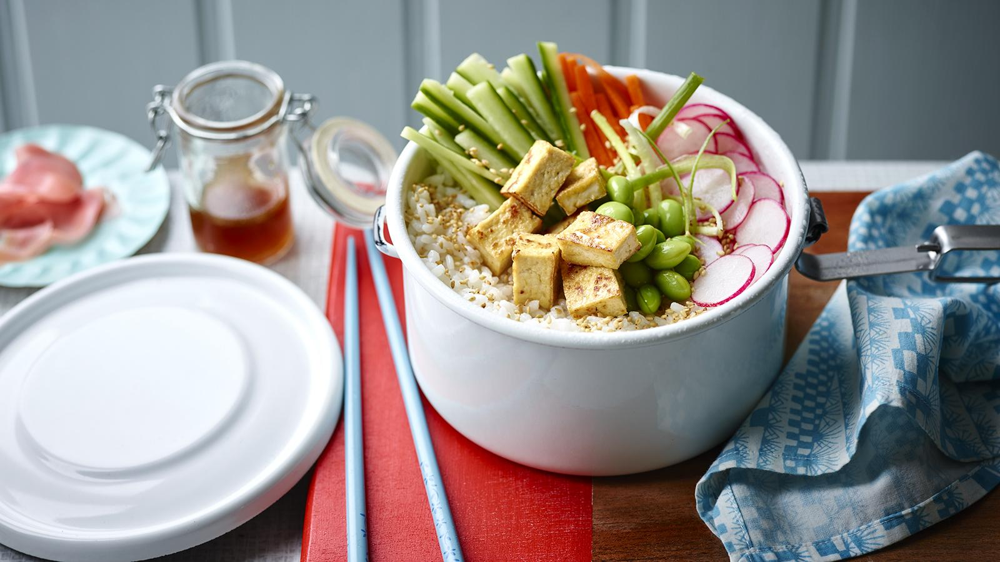

Tofu sushi bowl

Introduction
Sushi bowls are a fast and inexpensive alternative to your favourite sushi bar. They’re easy to put together, and you can customise the ingredients to your liking.
Ingredients
- 100g/3½oz firm tofu, drained
- 50g/1¾oz sushi rice
- 25g/1oz frozen soya beans
- low-calorie cooking spray
- 4 radishes, thinly sliced
- ¼ small cucumber, halved lengthways, seeds removed, cut into thin matchsticks
- ¼ small carrot, peeled and cut into thin matchsticks
- 3 spring onions, thinly shredded
- 1 tsp toasted sesame seeds
- 1 tbsp Japanese pickled ginger, drained, to serve
Steps
- To make the sushi bowl, wrap the tofu in kitchen paper, sandwich between two plates or chopping boards and weigh down with a few tins from your cupboard. Leave to drain for 15 minutes.
- Meanwhile, bring a large saucepan of water to the boil and boil the sushi rice for 8–10 minutes, or until just cooked. Drain, place back in the pan, cover and set aside.
- Bring a small saucepan of water to the boil and cook the soya beans for 2 minutes, or until tender. Drain, refresh under cold water and set aside.
- To make the dressing, put the lime zest, juice and honey (or agave) in a small saucepan and simmer for 1 minute. Stir in the tamari, vinegar and sesame oil and set aside.
- Cut the tofu into 1.5cm/½in cubes. Spray a large frying pan with a little low-calorie cooking spray and place over a medium-high heat. Add the tofu and cook for 1 minute on each side until crisp and golden brown.
- Place the rice in a bowl or lunchbox and stir in the dressing. Top with the soya beans, radishes, cucumber, carrot and two-thirds of the spring onions. Sprinkle over the tofu, remaining spring onions and sesame seeds and serve with the pickled ginger or place in the fridge until ready to eat.